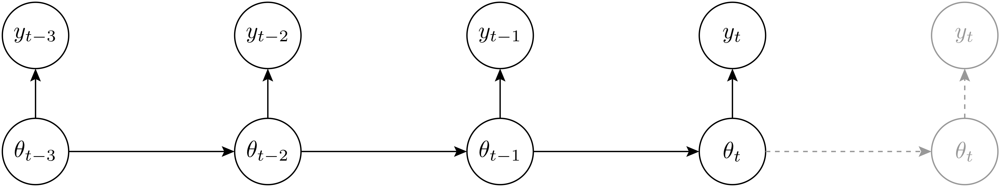
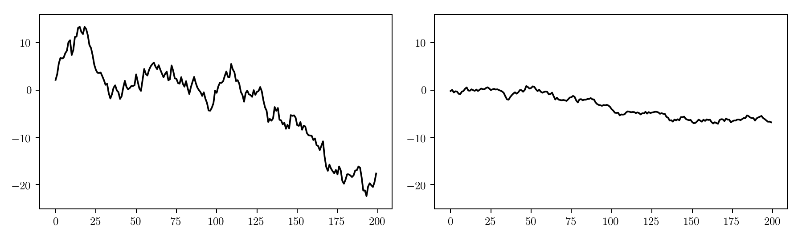
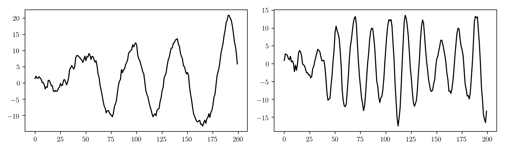
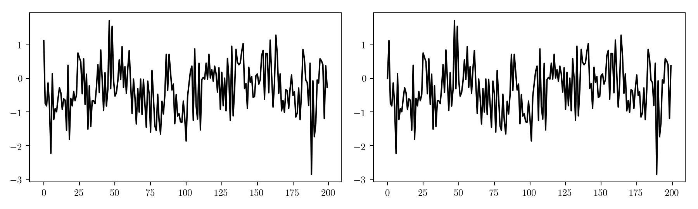
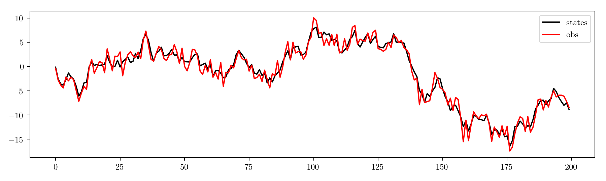
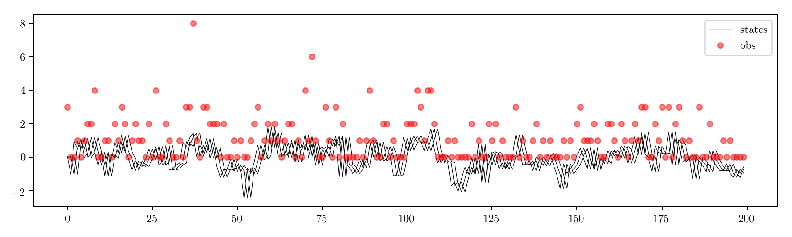
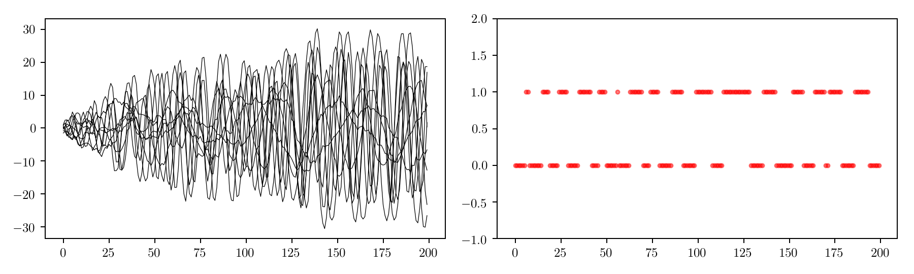
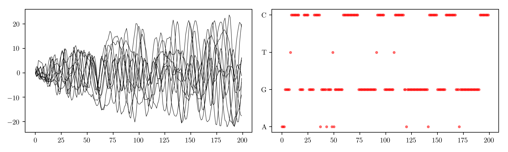
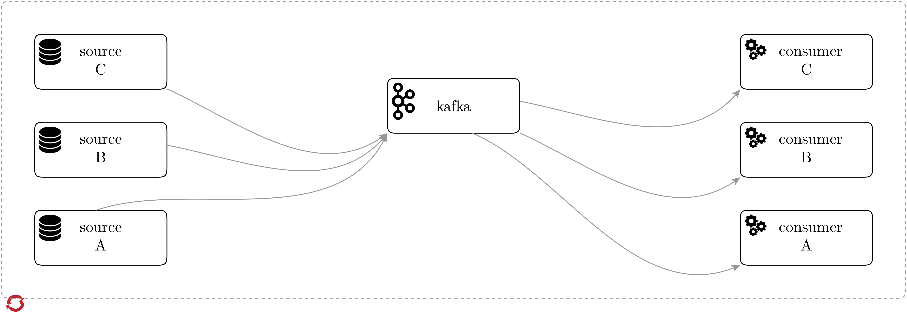

Containerised Streaming Data Generation using State-Space Models
To prototype and test almost any application some type of input data is needed. Getting the right data can be difficult for several reasons, including strict licenses, a considerable amount of data engineering to shape the data to our requirements and the setup of dedicated data producers. Additionally, in modern applications, we are often interested in realtime/streaming and distributed processing of data with platforms such as Apache Kafka and Apache Spark and deployment in a cloud environment like OpenShift with tools such as oshinko.
Simulating data is not trivial, since we might want to capture complex characteristic to evaluate our algorithms in conditions similar to the real world.
In this post I'll introduce a tool, timeseries-mock, which allows for a simple, containerised deployment of a data simulator along with some of the theory behind the data generation.
State-space models
A common way of modelling these patterns is to use state-space models (SSM). SSMs can be divided into a model and a observation structure.
\[Y_t|\theta_t,\Phi \sim f\left(y_t|\theta_t,\Phi_t\right) \\ \theta_t|\theta_{t-1},\Phi_t \sim g\left(\theta_t|\theta_{t-1},\Phi_t\right). \]

It is clear from the above that the state possesses a Markovian nature. The state at time \(t\), \(\theta_t\) will on depend on the previous value, \(\theta_{t-1}\) and an observation at time \(t\), \(y_t\) will only depend on the current state, \(\theta_t\), that is:
\[p\left(\theta_{t}|\theta_{0:t-1},y_{0:t-1}\right)=p\left(\theta_{t}|\theta_{t-1}\right) \\ p\left(\theta_{t-1}|\theta_{t:T},y_{t:T}\right)=p\left(\theta_{t-1}|\theta_{t}\right) \\ p\left(y_{t}|\theta_{0:t},y_{0:t-1}\right)=p\left(y_{t}|\theta_{t}\right). \]
In this post we will focus on a specific instance of SSMs, namely Dynamic Generalised Linear Models (DGLMs). If you want a deeper theoretical analysis of DGLMs I strongly recommend Mike West and Jeff Harrison's "Bayesian Forecasting and Dynamic Models" (1997).
In DGLMs, the observation follows a distribution from the exponential family, \(E\left(\cdot\right)\) such, that
\[Y_t|\theta_t,\Phi \sim E\left(\eta_t,\Phi\right) \\ \eta_t|\theta_t = L\left(\mathsf{F}^T \theta_t\right) \]
where \(L\left(\cdot\right)\) is the linear predictor and the state evolves according to a multivariate normal (MVN) distribution:
\[\theta_t \sim \mathcal{N}\left(\theta_t;\mathsf{G}\theta_{t-1},\mathsf{W}\right) \]
Structure
The fundamental way in which timeseries-mock works is by specifying the underlying structure and observational model in a YAML configuration file. In the following sections we will look at the options available in terms of structural and observational components and look at how to represent them. As we've seen from (5), the structure will allows us to define the underlying patterns of the state evolution \(\lbrace \theta_1, \theta_2, \cdots, \theta_t\rbrace\). One of the advantages of DGLMs is the ability to compose several simpler components into a single complex structure. We will then look at some of these "fundamental" components.
Mean
An underlying mean component will represent a random-walk scalar state which can be specified in the configuration file by
structure: - type: mean start: 0.0 noise: 1.5
In this case start will correspond the mean of the state prior, \(m_0\), and noise will correspond to the prior's variance, \(\tau^2\), that is
\[\theta_0 \sim \mathcal{N}\left(m_0, \tau^2\right). \]
In the figure below we can see the above configuration for, respectively, a higher and lower value of noise.

Seasonality
Seasonality is represented by Fourier components. A Fourier component can be completely specified by providing the period, start, noise and harmonics.
The start and noise parameters are analogous to the mean components we saw previously.
The period parameter refers to how long does it take for the cyclical pattern to repeat. This is done relatively to your time-point interval, such that
\[P = p_{\text{fourier}}\cdot p_{\text{stream}}. \]
That is, if your stream's rate is one observation every 100 milliseconds, \(p_{\text{stream}}=0.1\), and the harmonic's period is 2000, \(p_{\text{fourier}}=1000\), then the seasonal component will repeat every \(200\) seconds. The configuration example
structure: - type: season period: 200 harmonics: 5 start: 0.0 noise: 0.7
will create a sequence of state vectors \(\boldsymbol{\theta}_{0:T}\) with five components, such that:
\[\boldsymbol{\theta}_t = \lbrace\theta_{1,t},\cdots,\theta_{5,t}\rbrace. \]
In this example, period refers to the number of time-points for each cycle's repetition and harmonics to the number of Fourier harmonics used. "Simpler" cyclic patterns usually require less harmonics. In the figure below we show on the lowest and highest frequency harmonics, on the left and right respectively.

AR-p
An AR(\(p\)) (Auto-Regressive) component can be specified using the directives:
structure: - type: arma start: 0.0 coefficients: 0.1,0.3,0.15 noise: 0.5
In the above example we would be creating an AR(3) component, with respective coefficients \(\phi=\lbrace 0.1,0.3,0.15 \rbrace\). These coefficients will take part of the state model as
\[\mathsf{G} = \begin{bmatrix} \phi_1 & \phi_2 & \cdots & \phi_{p-1} & \phi_p \\ 1 & 0 & \cdots & 0 & 0 \\ \vdots & & \ddots & \vdots & \vdots \\ 0 & \cdots & 0 & 1 & 0 \end{bmatrix} \]
In the following plots we show respectively the first and second component of the AR(3) state vector.

Composing
Structural composition of DGLM structures amounts to the individual composition of the state covariance matrix and state/observational evolution matrices such that:
\[\mathsf{F}^T = \begin{bmatrix}\mathsf{F}_1 & \mathsf{F}_2 & \dots \mathsf{F}_i\end{bmatrix}^T \\ \mathsf{G} = \text{blockdiag}\left(\mathsf{G}_1, \mathsf{G}_2, \dots, \mathsf{G}_i\right) \\ \mathsf{W} = \text{blockdiag}\left(\mathsf{W}_1, \mathsf{W}_2, \dots, \mathsf{W}_i\right) \]
To express the composition of structures in the YAML configuration, we simply enumerate the separate components under the structure key. As as example, to compose the previous mean and seasonal components, we would simply write:
structure: - type: mean start: 0.0 noise: 1.5 - type: season period: 200 harmonics: 5 start: 0.0 noise: 0.7
This would create a structure containing both an underlying mean and a seasonal component.
Observations
As we have seen from (3) that an observational model can be coupled with a structure to complete the DGLM specification. In the following sections we will look at some example observational models and in which situations they might be useful.
Continuous
Continuous observations are useful to model real valued data such as stock prices, temperature readings, etc. This can be achieved by specifying the observational component as a Gaussian distribution such that:
\[Y_t|\Phi \sim \mathcal{N}\left(y_t|\eta_t, \mathsf{W}\right). \]
observations: - type: continuous noise: 1.5
The following plot shows the coupling of the structure used in the mean section with the continuous (example above) observational model.

Discrete
Discrete observations, sometimes referred as "count data", can be used to model integer quantities. This can be achieved by using a Poisson distribution in the observational model, such that:
\[Y_t|\Phi \sim \text{Po}\left(y_t|\eta_t\right) \]
An example configuration would be:
observations: - type: discrete
In this case we will use the previous ARMA(3) structure example and couple it with a discrete observational model. The result is shown in the plot below:

Categorical
In the categorical case, we model the observations according to a binomial distribution, such that
\[Y_t \sim \text{Bin}\left(y_t|\eta_t,r\right), \]
where \(r\) represents the number of categories. A typical example would be the case where \(r=1\) which would represent a binary outcome (0 or 1). The following configuration implements this very case:
observations: - type: categorical categories: 1
We can see in the plot below (states on the left, observations on the right) a realisation of this stream, when using the previous seasonal example structure.

Often, when simulating a data stream, we might be interested in the category labels themselves, rather than a numerical value. The generator allows to pass directly a list of labels and output the labelled observations. Let's assume we wanted to generate a stream of random DNA nucleotides (C, T, A and G). The generator allows to pass the labels directly and output the direct mapping between observations and label, that is:
\[y_t: \lbrace 0, 1, 2, 3 \rbrace \mapsto \lbrace\text{C, T, A, G}\rbrace \]
observations: - type: categorical values: C,T,A,G
Using the same seasonal structure and observation model as above, the output would then be:

Composite model
In a real-world scenario we are interested in simulating multivariate data and that comprises of different observational models. For instance, combining observation components from categorical, continuous, etc.
The approach taken for multivariate composite models, is that the structures are composed as seen previously into a single one and the resulting state vector is then "collapsed" into a vector on natural parameters, \(\eta_t\) which are then used to sample the individual observation components.
\[\theta_t = \lbrace\underbrace{\theta_{1}, \theta_{2}, \theta_{3}}_{\eta_1}, \underbrace{\theta_{4}, \theta_{5}, \theta_{6}}_{\eta_2}\rbrace \\ y = f(\eta_t) \\ = \lbrace f_1(\eta_1), f_2(\eta_2)\rbrace \]
The model composition can be expressed by grouping the different structures and observations under a compose key:
compose: - structure: # component 1 - type: mean start: 0.0 noise: 0.5 - observations: - type: continuous noise: 0.5 - structure: # component 2 - type: mean start: 5.0 noise: 3.7 - observations: - type: continuous noise: 1.5
Examples
We will look at two separate examples, one that creates a stream of simulated stock prices and one that generates a fake HTTP log.
We assume we want to simulate a stream of per-day stock prices for 3 different companies, each with different characteristics. In this case, we will model the following:
- Company A's stocks start at quite a high value ($700) and are quite stable throughout time
- Company B's stocks start slightly lower than A ($500) and are quite stable in the long run, but show heavy fluctuation from day to day
- Company C's stocks start at $600 are very unpredictable
Since we will be using per-day data we won't be streaming this in realtime! We can map each daily observation to a second in our stream so we will specify a period=1. All stocks will exhibit a small monthly effect (period=30), which will be indicated by a noise=0.01 and a yearly effect (period=365) with a noise=2.5.
The resulting configuration will be:
compose: - structure: # company A - type: mean start: 700 noise: 0.01 # low structural variance - type: season period: 30 # monthly seasonality noise: 0.1 - type: season period: 365. # yearly seasonality noise: 1.7 - observations: - type: continuous noise: 0.05 # low observational variance - structure: # company B - type: mean start: 500 noise: 0.01 # low structural variance - type: season period: 30 # monthly seasonality noise: 0.7 - type: season period: 365. # yearly seasonality noise: 3.7 - observations: - type: continuous noise: 3.00 # higher observational variance - structure: # company C - type: mean start: 600 noise: 3.0 # higher structural variance - type: season period: 30 # monthly seasonality noise: 0.1 - type: season period: 365. # yearly seasonality noise: 0.25 - observations: - type: continuous noise: 4.0 # higher observational variance
A realisation of this stream looks like the figure below.

To generate the fake HTTP log we will make the following assumptions:
- We will have a request type (
GET,POST,PUT) which will vary following a random walk - A set of visited pages which, for illustration purposes, will be limited to (
/site/page.htm,/site/index.htmand/internal/example.htm). We also want that the URLs visited follow a seasonal pattern. - An IP address in the IPv4 format (i.e.
0-255.0-255.0-255.0-255)
It is clear that for all variables the appropriate observational model is the categorical one. For the request type and the visited page we can pass directly the category name in the configuration file and for the IP we simply need four categorical observations with \(r=255\).
If the underlying structure is the same, a useful shortcut to specify several observation component is the replicate key. In this particular example to generate four 0-255 numbers with an underlying mean as the structure, we simple use:
- replicate: 4 structure: - type: mean start: 0.0 noise: 2.1 observations: type: categorical categories: 255
The full configuration for the HTTP log simulation could then be something like this:
compose: - structure: - type: mean start: 0.0 noise: 0.01 observations: type: categorical values: GET,POST,PUT - structure: - type: mean start: 0.0 noise: 0.01 - type: season start: 1.0 period: 15 noise: 0.2 observations: type: categorical values: /site/page.htm,/site/index.htm,/internal/example.htm - replicate: 4 structure: - type: mean start: 0.0 noise: 2.1 observations: type: categorical categories: 255
["PUT", "/internal/example.htm", 171, 158, 59, 89] ["GET", "/internal/example.htm", 171, 253, 71, 146] ["PUT", "/internal/example.htm", 224, 252, 9, 156] ["POST", "/site/index.htm", 143, 253, 6, 126] ["POST", "/site/page.htm", 238, 254, 2, 48] ["GET", "/site/page.htm", 228, 252, 52, 126] ["POST", "/internal/example.htm", 229, 234, 103, 233] ["GET", "/internal/example.htm", 185, 221, 109, 195] ...
Setting up the generator
As I have mentioned in the beginning of this post, we want to fit the data simulation solution into a cloud computing workflow. To illustrate this we will use the OpenShift platform which allows for the deployment of containerised applications. A typical setup for a streaming data processing application would be as illustrated in the figure below. We have several sources connected to a message broker, such as Apache Kafka in this case. Data might be partitioned into "topics" which are then consumed by different applications, each performing data processing, either independently or in a distributed manner.

An advantage of timeseries-mock would then be to replace the "real" data sources with a highly configurable simulator either for the prototyping or initial testing phase. If we consider our previous example of the "fake" HTTP log generation, an application for Web log analytics could be prototyped and tested with simulated log data very quickly, without being blocked by the lack of suitable real data.
Since the data is consumed by proxy via the message broker's topics, we could later on replace the simulator with real data sources seamlessly without an impact on any of the applications.
To setup the generator (and assuming Kafka and your consumer application are already running on OpenShift) we only need to perform two steps:
- Write the data specifications in a YAML configuration
- Use the
s2ito deploy the simulator
The s2i functionality of OpenShift allows to create deployment ready images by simply pointing to a source code location. In this case we could simply write:
oc new-app centos/python-36-centos7~https://github.com/ruivieira/timeseries-mock \ -e KAFKA_BROKERS=kafka:9092 \ -e KAFKA_TOPIC=example \ -e CONF=examples/mean_continuous.yml \ --name=emitter
In this case, we would deploy a simulator generating data according to the specifications in mean_continuous.yml. This data will be sent to the topic example of a Kafka broker running on port 9092.

The stream will be ready to consume and message payload will a stream of serialised JSON strings. In the case of the simulated HTTP log this would be:
{
name: "HTTP log"
values: ["GET", "/internal/example.htm", 185, 221, 109, 195]
}
name- the name given to this stream in the configuration filevalues- a single observation for this stream
After consuming the data it is straight-forward to do any post-processing if needed. For instance, the values above could be easily transformed into a standard Apache Web server log line.
I hope you found this tool useful, simple to use and configure. Some future work includes adding more observations distributions beyond the exponential family and the ability to directly add transformation rules to the generated observations.
If you have any suggestions, use cases (or found an issue!), please let me know in the repository.
If you have any comments please let me know on Mastodon (or Twitter).
Happy coding!